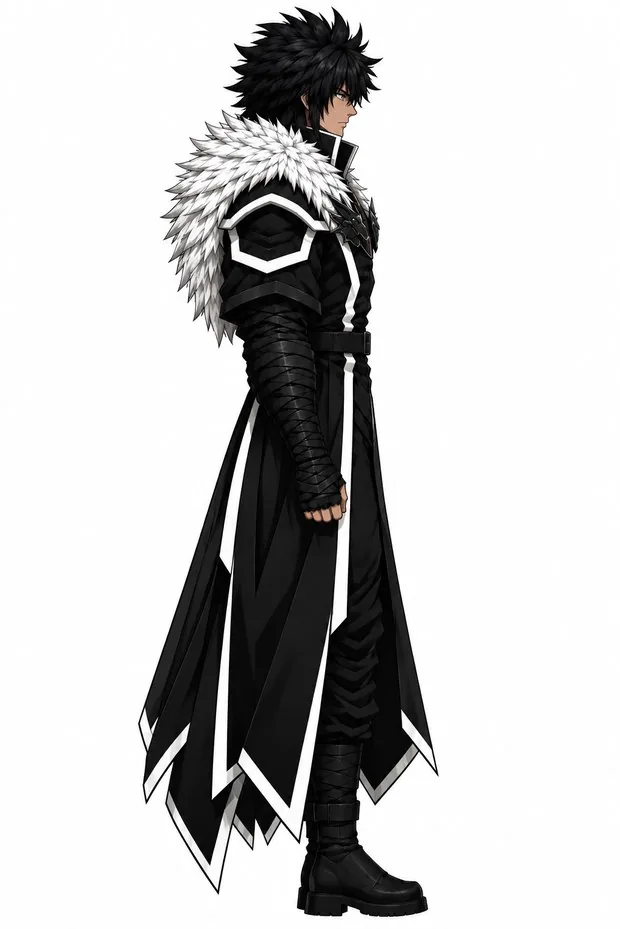
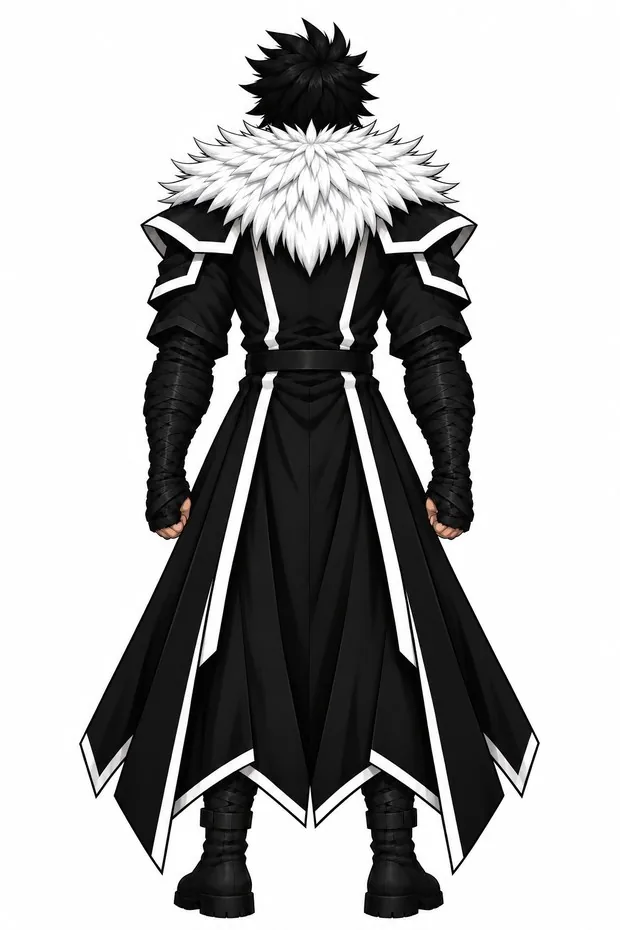
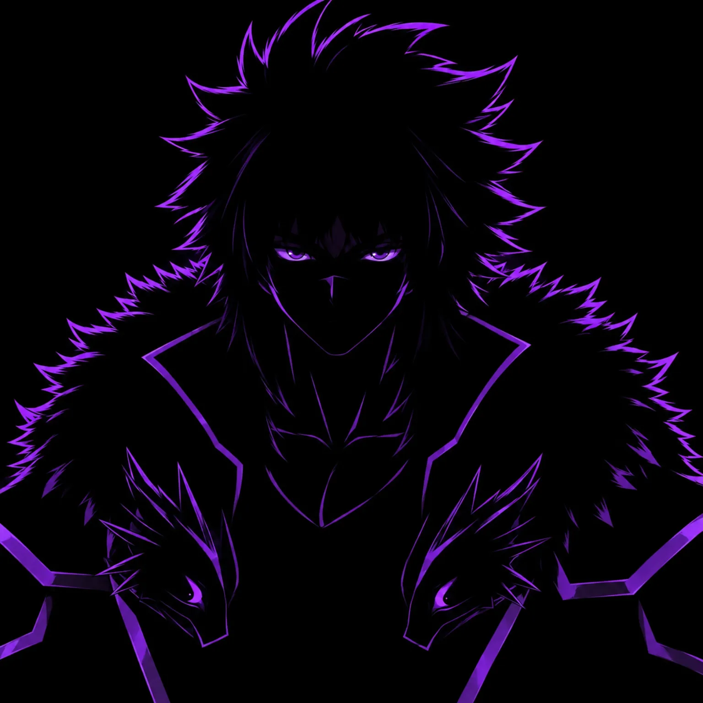
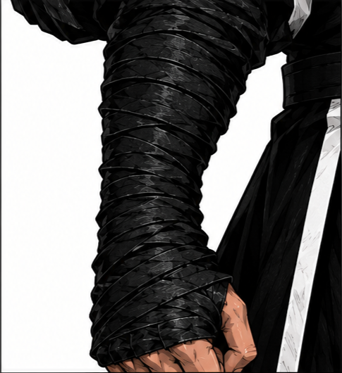
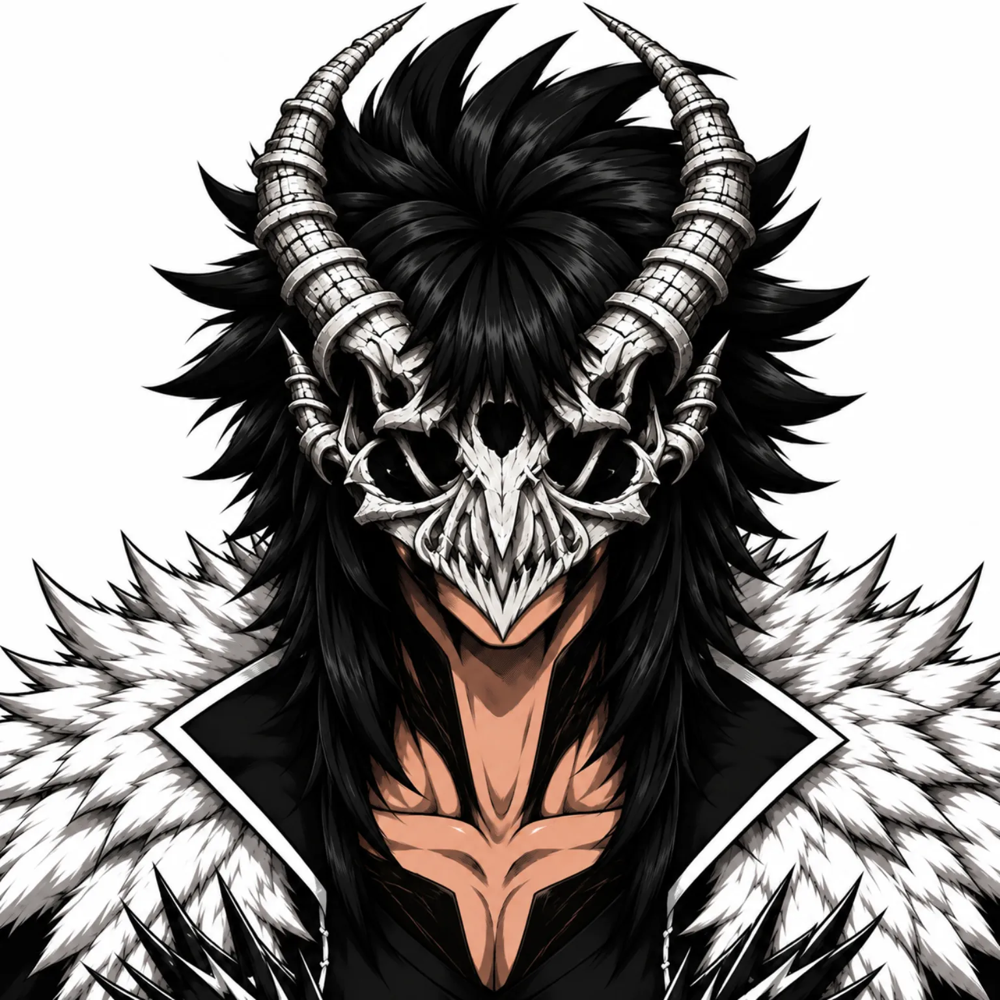

Fearness

Quem é Fearness
Pouco comunicativo, sereno e sem propósito maior, Fearness só é dominado por uma obsessão: vencer para não perder. Toque em cada quadrante para ver mais.
Outras vistas


Aparência e vestimenta
Forsaken
Os pilares do poder
Anular, absorver, converter e dissipar: os quatro pilares do poder. Toque em um quadrante para ver mais.
Ciclo do poder
O ciclo é apenas uma demonstração, usada como exemplo de como o poder funciona na prática. O poder em si não é um ciclo. Toque em uma etapa do ciclo para ver o que ela representa.

Dinamismo dos olhos
Restrição

Sobrecarga
Quando a energia ultrapassa a capacidade de armazenamento estável, o reservatório se torna instável e a energia armazenada vaza progressivamente. A anulação e a absorção ficam indisponíveis até a reserva chegar a zero.
A linha branca marca o limite de armazenamento estável. O excedente desencadeia a Sobrecarga, que permanece até o esvaziamento completo do reservatório.
Selo

As faixas negras dos antebraços restringem o acesso à Forsaken Rupture e à sua capacidade adicional de armazenamento energético. A retirada dos selos libera o acesso à transformação, cuja ativação depende da presença de energia excedente à capacidade convencional. Ative as duas condições abaixo:
Forsaken Rupture

Barra de reserva
Com os selos removidos, o excedente energético desencadeia a Forsaken Rupture. A expansão estabiliza esse excedente, que passa a sustentar a transformação e permite acumular mais energia na reserva adicional.